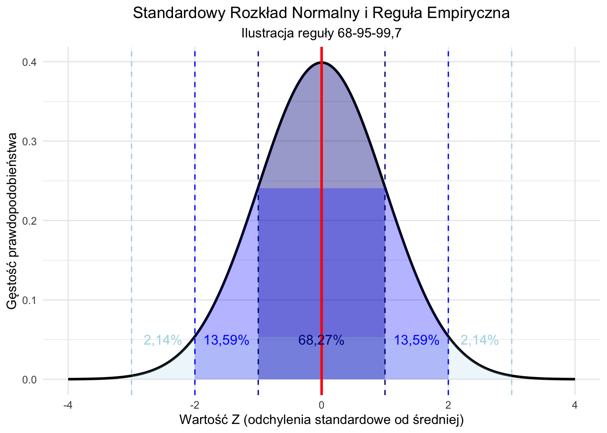
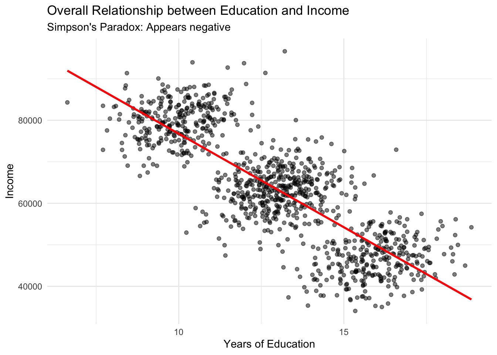
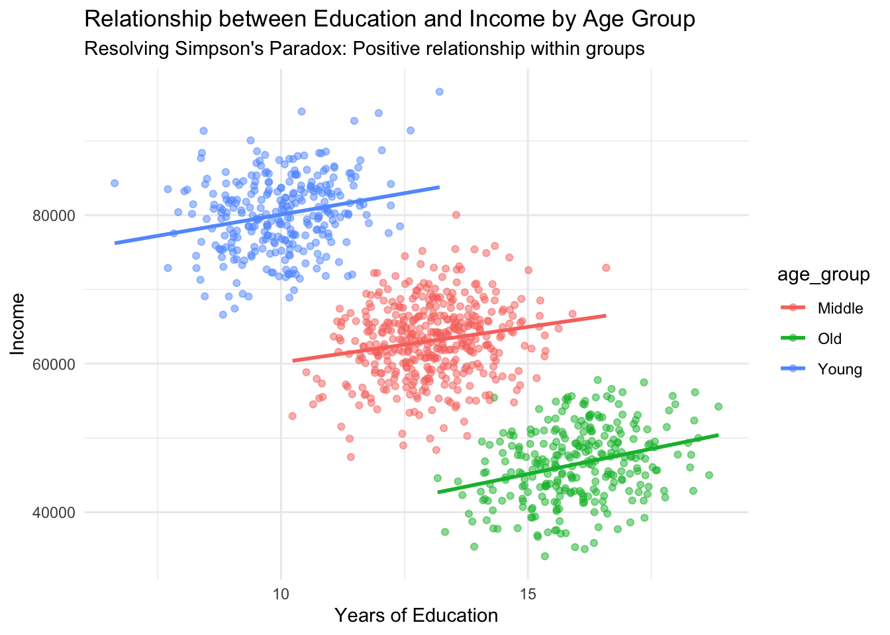
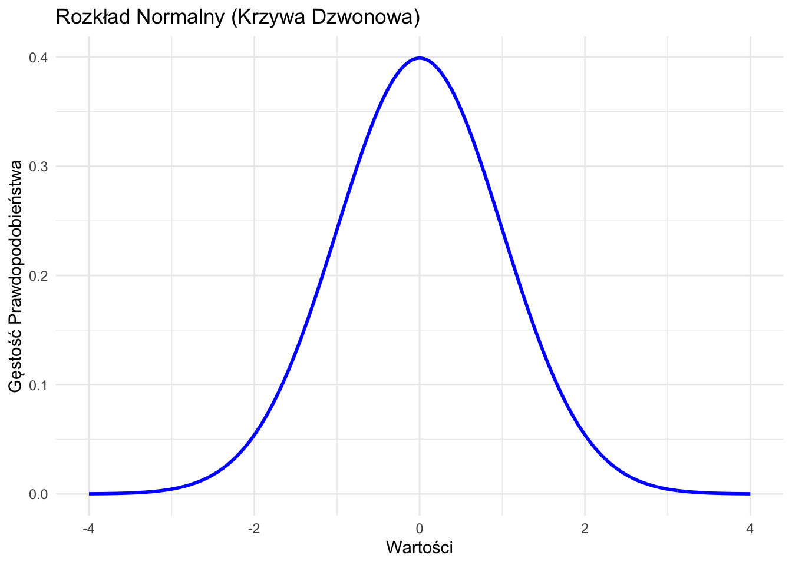
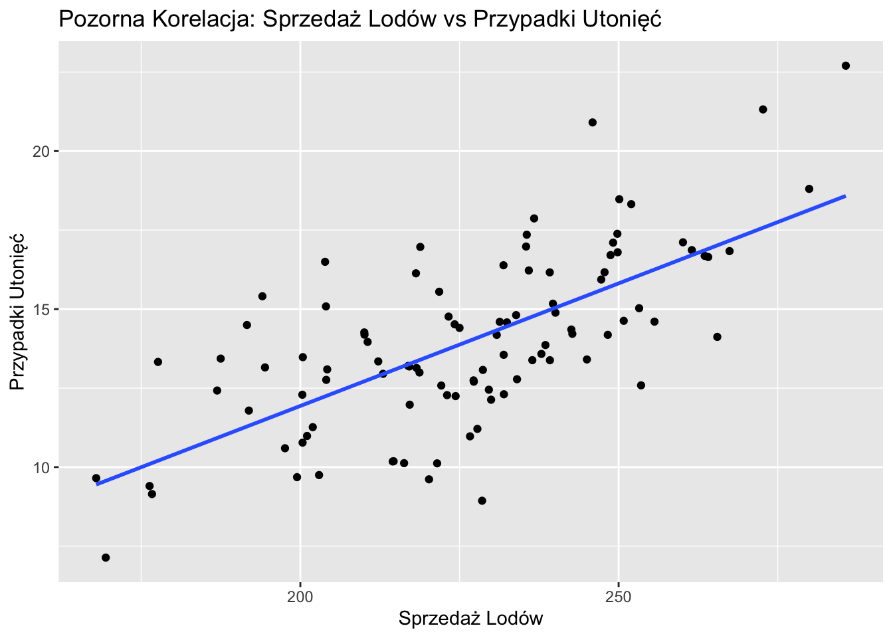
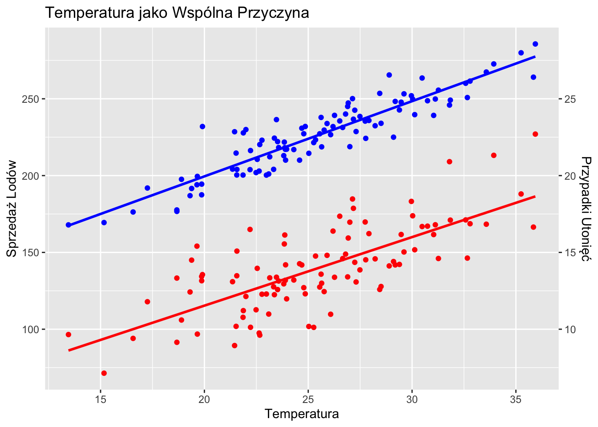

2Wprowadzenie do Nauki o Danych i Statystyki dla Nauk Społecznych
Ten rozdział stanowi wprowadzenie do nauki o danych i statystyki dla studentów nauk społecznych.
2.1 Czym jest Nauka o Danych?
Nauka o danych to interdyscyplinarna dziedzina, która łączy w sobie metody naukowe, zaawansowane procedury, algorytmy oraz systemy informatyczne. Jej celem jest wydobywanie cennej wiedzy i odkrywanie ukrytych wzorców zarówno z danych jakościowych, jak i ilościowych. Ta innowacyjna dyscyplina pozwala na głębsze zrozumienie złożonych zjawisk i umożliwia podejmowanie decyzji opartych na rzetelnych analizach.
Kluczowy Punkt
W naukach społecznych nauka o danych łączy metody statystyczne, narzędzia obliczeniowe i wiedzę dziedzinową do analizy złożonych zjawisk społecznych i zachowań ludzkich.
2.2 Związek Między Statystyką a Nauką o Danych
Chociaż statystyka i nauka o danych są ściśle powiązane, mają pewne różnice:
Koncentruje się na teoriach matematycznych i metodach zbierania, analizowania, interpretowania i prezentowania danych
Kładzie nacisk na wnioskowanie statystyczne, testowanie hipotez i teorię prawdopodobieństwa
Ma długą historię w naukach społecznych w analizie danych ankietowych, wyników eksperymentalnych i badań obserwacyjnych
Łączy metody statystyczne z informatyką i wiedzą dziedzinową
Kładzie nacisk na big data, uczenie maszynowe i modelowanie predykcyjne
W naukach społecznych często zajmuje się danymi cyfrowymi na dużą skalę, danymi z mediów społecznościowych i złożonymi zbiorami danych behawioralnych
Nauka o danych może być postrzegana jako wynik ewolucji i rozszerzenie tradycyjnej statystyki, włączając nowe technologie i metody do obsługi większych i bardziej złożonych zbiorów danych w naukach społecznych.
2.3 Podstawowe Koncepcje w Nauce o Danych i Statystyce
2.3.1 Populacja Statystyczna, Próba i Proces Generowania Danych
Zrozumienie relacji między populacją, próbą i procesem generowania danych (PGD) jest kluczowe w badaniach nauk społecznych.
Definicje
Populacja: Cała grupa osób lub obiektów, o których poszukuje się informacji.
Próba: Podzbiór populacji, który jest wybierany do badania.
Proces Generowania Danych (PGD; Data Generating Process, DGP): Podstawowy mechanizm lub system, który ‘produkuje’ obserwowane dane.
2.3.1.1 Porównanie Populacji i PGD:
Populacja reprezentuje grupę, którą chcemy badać, podczas gdy PGD jest mechanizmem produkującym cechy, które obserwujemy w tej populacji.
W naukach społecznych PGD często obejmuje złożone czynniki społeczne, psychologiczne i ekonomiczne, które kształtują cechy populacji.
Zrozumienie PGD pomaga nam interpretować, dlaczego populacja ma pewne cechy i jak mogą się one zmieniać w czasie lub w różnych kontekstach.
PGD: Złożone współdziałanie czynników wpływających na decyzje wyborcze, takich jak przekonania polityczne, warunki ekonomiczne, ekspozycja na media i sieci społeczne.
Zrozumienie PGD pomaga badaczom interpretować zachowania wyborcze i potencjalnie przewidywać przyszłe trendy.
Zobrazujmy tę koncepcję za pomocą R:
Kliknij, aby pokazać/ukryć kod R
library(ggplot2)# Symulacja populacji na podstawie prostego PGDset.seed(123)wiek <-rnorm(10000, mean =45, sd =15)dochod <-exp(rnorm(10000, mean =10, sd =0.5))prawdopodobienstwo_glosowania <-plogis(-5+0.05* wiek +0.00003* dochod +rnorm(10000, sd =0.5))populacja <-data.frame(wiek = wiek, dochod = dochod, prawdopodobienstwo_glosowania = prawdopodobienstwo_glosowania)# Wybór losowej próbyindeksy_proby <-sample(1:nrow(populacja), 1000)dane_proby <- populacja[indeksy_proby, ]# Wizualizacjaggplot(dane_proby, aes(x = wiek, y = dochod, color = prawdopodobienstwo_glosowania)) +geom_point(alpha =0.6) +scale_color_viridis_c() +labs(title ="Próba: Wiek, Dochód i Prawdopodobieństwo Głosowania",x ="Wiek", y ="Dochód", color ="Prawdopodobieństwo Głosowania") +theme_minimal()

Ta wizualizacja pokazuje, jak wiek i dochód (część PGD) wpływają na prawdopodobieństwo głosowania w naszej symulowanej populacji, na podstawie wybranej próby.
Metody eksperymentalne: Kontrolowane badania, w których naukowcy manipulują zmiennymi, aby obserwować efekty
Badania obserwacyjne: Gromadzenie danych poprzez obserwację i rejestrację bez ingerencji
Ankiety i wywiady: Zbieranie informacji bezpośrednio od ludzi poprzez zadawanie pytań
Cyfrowe zbieranie danych: Gromadzenie danych ze źródeł internetowych, czujników lub systemów komputerowych
Aspekty etyczne: Zapewnienie, że badania respektują prawa i dobro uczestników
Czyszczenie danych: Usuwanie błędów i niespójności z surowych danych
Obsługa brakujących wartości: Radzenie sobie z lukami w zbiorze danych, które mogłyby wpłynąć na analizę
Transformacja danych: Konwertowanie danych na formaty odpowiednie do analizy, np. zmiana tekstu na liczby
Statystyki opisowe: Podsumowanie danych za pomocą miar takich jak średnia, mediana i odchylenie standardowe
Wizualizacja danych: Tworzenie wykresów i diagramów do wizualnego przedstawienia wzorców w danych
Identyfikacja wzorców: Odkrywanie trendów lub zależności w danych
Testowanie hipotez: Wykorzystanie danych do oceny twierdzeń o populacjach
Analiza regresji: Badanie zależności między zmiennymi i dokonywanie przewidywań
Wnioskowanie przyczynowe: Określanie, czy jedna zmienna bezpośrednio wpływa na inną
Uczenie nadzorowane: Trenowanie modeli do przewidywania wyników przy użyciu danych ze znanymi odpowiedziami
Uczenie nienadzorowane: Znajdowanie ukrytych wzorców w danych bez predefiniowanych kategorii
Przetwarzanie języka naturalnego (NLP): Nauczanie komputerów rozumienia i analizy ludzkiego języka
Efektywne wizualizacje: Tworzenie czytelnych, informatywnych grafik do przedstawiania złożonych danych
Komunikacja naukowa: Wyjaśnianie wyników różnym odbiorcom, od ekspertów po ogół społeczeństwa
Pisanie naukowe: Przygotowywanie artykułów i raportów naukowych w celu dzielenia się wynikami
Kontrola wersji: Śledzenie zmian w danych i kodzie w trakcie procesu badawczego
Praktyki otwartych danych: Udostępnianie danych i metod badawczych do weryfikacji i dalszych badań
Powtarzalne procesy badawcze: Dokumentowanie kroków badawczych, aby inni mogli powtórzyć badanie
2.5 Narzędzia do Nauki o Danych w Naukach Społecznych
W tym kursie będziemy głównie używać R do naszej analizy danych, ponieważ jest on szeroko stosowany w badaniach nauk społecznych.
2.5.1 R w Analizie Danych Nauk Społecznych
R oferuje potężne możliwości dla badań w naukach społecznych, od manipulacji danymi po zaawansowane modelowanie statystyczne.
Kliknij, aby pokazać/ukryć kod R
library(tidyverse)
── Attaching core tidyverse packages ──────────────────────── tidyverse 2.0.0 ──
✔ dplyr 1.1.4 ✔ readr 2.1.5
✔ forcats 1.0.0 ✔ stringr 1.5.1
✔ lubridate 1.9.3 ✔ tibble 3.2.1
✔ purrr 1.0.2 ✔ tidyr 1.3.1
── Conflicts ────────────────────────────────────────── tidyverse_conflicts() ──
✖ dplyr::filter() masks stats::filter()
✖ dplyr::lag() masks stats::lag()
ℹ Use the conflicted package (<http://conflicted.r-lib.org/>) to force all conflicts to become errors
Kliknij, aby pokazać/ukryć kod R
# Set seed for reproducibilityset.seed(42)# Generate example data with a stronger Simpson's Paradoxn <-1000data <-tibble(age_group =sample(c("Young", "Middle", "Old"), n, replace =TRUE, prob =c(0.3, 0.4, 0.3)),education_years =case_when( age_group =="Young"~rnorm(n, mean =10, sd =1), age_group =="Middle"~rnorm(n, mean =13, sd =1), age_group =="Old"~rnorm(n, mean =16, sd =1) ),income =case_when( age_group =="Young"~70000+1000* education_years +rnorm(n, mean =0, sd =5000), age_group =="Middle"~50000+1000* education_years +rnorm(n, mean =0, sd =5000), age_group =="Old"~30000+1000* education_years +rnorm(n, mean =0, sd =5000) ))# Basic data summarysummary(data)
age_group education_years income
Length:1000 Min. : 6.628 Min. :34068
Class :character 1st Qu.:10.913 1st Qu.:51508
Mode :character Median :13.004 Median :63376
Mean :12.986 Mean :63307
3rd Qu.:14.934 3rd Qu.:75023
Max. :18.861 Max. :96620
education_years income
education_years 1.0000000 -0.8152477
income -0.8152477 1.0000000
Kliknij, aby pokazać/ukryć kod R
# Overall trend (Simpson's Paradox)overall_plot <-ggplot(data, aes(x = education_years, y = income)) +geom_point(alpha =0.5) +geom_smooth(method ="lm", se =FALSE, color ="red") +labs(title ="Overall Relationship between Education and Income",subtitle ="Simpson's Paradox: Appears negative",x ="Years of Education", y ="Income") +theme_minimal()# Trend by age group (Resolving Simpson's Paradox)grouped_plot <-ggplot(data, aes(x = education_years, y = income, color = age_group)) +geom_point(alpha =0.5) +geom_smooth(method ="lm", se =FALSE) +labs(title ="Relationship between Education and Income by Age Group",subtitle ="Resolving Simpson's Paradox: Positive relationship within groups",x ="Years of Education", y ="Income") +theme_minimal()# Statistical analysismodel_overall <-lm(income ~ education_years, data = data)model_by_age <-lm(income ~ education_years + age_group, data = data)# Print resultsprint(overall_plot)
`geom_smooth()` using formula = 'y ~ x'

Kliknij, aby pokazać/ukryć kod R
print(grouped_plot)
`geom_smooth()` using formula = 'y ~ x'

Kliknij, aby pokazać/ukryć kod R
print(summary(model_overall))
Call:
lm(formula = income ~ education_years, data = data)
Residuals:
Min 1Q Median 3Q Max
-24451 -5439 235 5262 34328
Coefficients:
Estimate Std. Error t value Pr(>|t|)
(Intercept) 121814.7 1339.5 90.94 <2e-16 ***
education_years -4505.4 101.3 -44.47 <2e-16 ***
---
Signif. codes: 0 '***' 0.001 '**' 0.01 '*' 0.05 '.' 0.1 ' ' 1
Residual standard error: 7976 on 998 degrees of freedom
Multiple R-squared: 0.6646, Adjusted R-squared: 0.6643
F-statistic: 1978 on 1 and 998 DF, p-value: < 2.2e-16
Kliknij, aby pokazać/ukryć kod R
print(summary(model_by_age))
Call:
lm(formula = income ~ education_years + age_group, data = data)
Residuals:
Min 1Q Median 3Q Max
-14827 -3369 118 3356 16388
Coefficients:
Estimate Std. Error t value Pr(>|t|)
(Intercept) 48270.8 2028.4 23.797 < 2e-16 ***
education_years 1135.5 154.6 7.345 4.26e-13 ***
age_groupOld -19942.8 593.2 -33.619 < 2e-16 ***
age_groupYoung 20461.1 600.7 34.064 < 2e-16 ***
---
Signif. codes: 0 '***' 0.001 '**' 0.01 '*' 0.05 '.' 0.1 ' ' 1
Residual standard error: 4950 on 996 degrees of freedom
Multiple R-squared: 0.8711, Adjusted R-squared: 0.8707
F-statistic: 2244 on 3 and 996 DF, p-value: < 2.2e-16
Kliknij, aby pokazać/ukryć kod R
# Calculate and print correlationsoverall_cor <-cor(data$education_years, data$income)group_cors <- data %>%group_by(age_group) %>%summarize(correlation =cor(education_years, income))print("Overall correlation:")
[1] "Overall correlation:"
Kliknij, aby pokazać/ukryć kod R
print(overall_cor)
[1] -0.8152477
Kliknij, aby pokazać/ukryć kod R
print("Correlations by age group:")
[1] "Correlations by age group:"
Kliknij, aby pokazać/ukryć kod R
print(group_cors)
# A tibble: 3 × 2
age_group correlation
<chr> <dbl>
1 Middle 0.185
2 Old 0.291
3 Young 0.223
Ten przykład demonstruje podstawowe operacje na danych, statystyki opisowe i wizualizację danych przy użyciu R.
2.6 Modele w Nauce: Od Deterministycznych do Stochastycznych
W tej sekcji omówimy różne rodzaje modeli stosowanych w nauce, od modeli deterministycznych często spotykanych w fizyce po modele stochastyczne powszechne w naukach społecznych i uczeniu maszynowym. Użyjemy R do zademonstrowania niektórych koncepcji i podamy przykłady.
Note
Model w nauce to uproszczona reprezentacja złożonego systemu lub zjawiska. Jest on ta zaprojektowany, aby pomóc nam zrozumieć, wyjaśnić i przewidywać zjawiska zachodzące w rzeczywistym świecie. Modele mogą przybierać różne formy, w tym równania matematyczne, symulacje komputerowe lub ramy koncepcyjne. Pozwalają naukowcom skupić się na kluczowych aspektach systemu, ignorując mniej istotne szczegóły, co sprawia, że złożone problemy stają się łatwiejsze do zrozumienia i badania.
2.7 Formy Modeli w Nauce
Modele są niezbędnymi narzędziami w badaniach naukowych, pomagając naukowcom reprezentować, rozumieć i przewidywać złożone zjawiska. Ta sekcja omawia główne typy modeli stosowanych w nauce, wraz z przykładami ich zastosowań. Należy pamiętać, że te kategorie często się nakładają, a wiele modeli naukowych łączy w sobie różne aspekty.
2.7.1 Modele Matematyczne
Modele matematyczne wykorzystują równania i koncepcje matematyczne do opisywania i analizowania systemów lub zjawisk. Można je podzielić na kilka podkategorii, choć należy pamiętać, że niektóre złożone modele mogą zawierać elementy z wielu kategorii:
2.7.1.1 a. Modele Deterministyczne
Modele deterministyczne dostarczają precyzyjnych przewidywań na podstawie zestawu zmiennych, bez uwzględniania losowości na poziomie makroskopowym.
Przykład: Prawa ruchu Newtona, które mogą precyzyjnie przewidzieć ruch obiektów pod wpływem znanych sił w mechanice klasycznej.
2.7.1.2 b. Modele Stochastyczne
Modele stochastyczne uwzględniają losowość i prawdopodobieństwo. Jednak kluczowe jest rozróżnienie dwóch fundamentalnie różnych typów modeli stochastycznych:
2.7.1.2.1 i. Klasyczne Modele Stochastyczne
Te modele zajmują się losowością wynikającą z niepełnej informacji lub złożonych interakcji w systemach klasycznych. Podstawowy system jest deterministyczny, ale praktyczne ograniczenia w pomiarach lub obliczeniach prowadzą do użycia opisów probabilistycznych.
Przykład: Modele regresji w statystyce, gdzie losowość reprezentuje niewyjaśnioną zmienność lub błąd pomiaru:
\[y = β_0 + β_1x + ε\]
Gdzie: - \(y\) to zmienna zależna - \(x\) to zmienna niezależna - \(β_0\) i \(β_1\) to parametry - \(ε\) to składnik błędu, reprezentujący niewyjaśnioną zmienność
2.7.1.2.2 ii. Kwantowe Modele Stochastyczne
Te modele zajmują się fundamentalną, nieredukowalną losowością nieodłącznie związaną z systemami mechaniki kwantowej. Ta losowość nie wynika z braku informacji, ale jest podstawową cechą rzeczywistości kwantowej.
Przykład: Model Standardowy w fizyce cząstek elementarnych, który opisuje interakcje cząstek za pomocą kwantowej teorii pola. Na przykład, rozpad cząstki jest z natury probabilistyczny:
\[P(t) = e^{-t/τ}\]
Gdzie: - \(P(t)\) to prawdopodobieństwo, że cząstka nie rozpadła się po czasie t - \(τ\) to średni czas życia cząstki
2.7.1.3 c. Modele Symulacji Komputerowych
Symulacje komputerowe wykorzystują algorytmy i metody obliczeniowe oparte na modelach matematycznych do symulowania złożonych systemów i przewidywania ich zachowania w czasie. Mogą być deterministyczne lub stochastyczne.
Przykład: Modele klimatyczne symulujące system klimatyczny Ziemi, uwzględniające czynniki takie jak skład atmosfery, prądy oceaniczne i promieniowanie słoneczne do prognozowania przyszłych scenariuszy klimatycznych.
2.7.2 Modele Koncepcyjne
Modele koncepcyjne to abstrakcyjne reprezentacje systemów lub procesów, często wykorzystujące diagramy lub schematy blokowe do ilustrowania relacji między komponentami.
Przykład: Model obiegu wody w naukach o Ziemi, który ilustruje ciągły ruch wody w obrębie Ziemi i atmosfery poprzez procesy takie jak parowanie, opady i spływ powierzchniowy.
2.7.3 Modele Fizyczne
Modele fizyczne to namacalne reprezentacje obiektów lub systemów, często w formie pomniejszonej lub uproszczonej wersji rzeczywistego obiektu.
Przykład: Modele tunelu aerodynamicznego w badaniach aerodynamiki, używane do badania efektów przepływu powietrza wokół obiektów stałych i optymalizacji projektów samolotów, pojazdów lub budynków.
2.7.4 Modele Teoretyczne
Modele teoretyczne to abstrakcyjne ramy oparte na fundamentalnych zasadach i hipotezach, często używane do wyjaśniania obserwowanych zjawisk lub przewidywania nowych. Te modele często wykorzystują równania matematyczne i mogą być deterministyczne lub stochastyczne.
Przykład: Teoria ewolucji poprzez dobór naturalny, która dostarcza ram do zrozumienia różnorodności i adaptacji form życia w czasie.
2.7.5 Podsumowanie
Te różne formy modeli odgrywają kluczową rolę w badaniach naukowych, każda oferując unikalne zalety dla zrozumienia i przewidywania zjawisk naturalnych. Naukowcy często używają wielu typów modeli jednocześnie, aby uzyskać kompleksowy wgląd w złożone systemy i procesy.
Ważne jest, aby zdawać sobie sprawę, że te kategorie nie są wzajemnie wykluczające i często się nakładają:
Modele matematyczne stanowią podstawę dla wielu innych typów modeli, w tym symulacji komputerowych i niektórych modeli teoretycznych.
Modele symulacji komputerowych są zasadniczo modelami matematycznymi implementowanymi za pomocą metod obliczeniowych i mogą być deterministyczne lub stochastyczne.
Modele teoretyczne często wykorzystują sformułowania matematyczne i mogą być implementowane jako symulacje komputerowe.
Modele fizyczne mogą być projektowane na podstawie modeli matematycznych i mogą być używane do walidacji symulacji komputerowych.
Wybór typu modelu często zależy od konkretnego pytania badawczego, natury badanego systemu, dostępnych danych oraz zasobów obliczeniowych. W miarę postępu nauki granice między tymi typami modeli coraz bardziej się zacierają, prowadząc do coraz bardziej wyrafinowanych i interdyscyplinarnych podejść do modelowania złożonych zjawisk.
Kluczowe jest rozróżnienie różnych typów modeli stochastycznych. Klasyczne modele stochastyczne, takie jak te używane w analizie regresji, zajmują się losowością wynikającą z niepełnej informacji lub złożonych interakcji w systemach, które są zasadniczo deterministyczne. Z drugiej strony, kwantowe modele stochastyczne, jak te w fizyce cząstek, zajmują się fundamentalną, nieredukowalną losowością nieodłącznie związaną z systemami mechaniki kwantowej. To rozróżnienie odzwierciedla głębokie różnice między klasycznymi a kwantowymi paradygmatami w fizyce i podkreśla różnorodne sposoby, w jakie prawdopodobieństwo jest wykorzystywane w modelowaniu naukowym.
2.8 Modele Deterministyczne
Modele deterministyczne to te, w których wynik jest w pełni określony przez wartości parametrów i warunki początkowe. Modele te są często używane w fizyce i inżynierii.
2.8.1 Przykład: Ruch Jednostajnie Przyspieszony
Klasycznym przykładem modelu deterministycznego jest ruch jednostajnie przyspieszony, opisany równaniem:
\[x(t) = x_0 + v_0t + \frac{1}{2}at^2\]
Gdzie:
\(x(t)\) to położenie w czasie \(t\)
\(x_0\) to położenie początkowe
\(v_0\) to prędkość początkowa
\(a\) to przyspieszenie
\(t\) to czas
Zasymulujmy to w R:
# Ruch jednostajnie przyspieszonysymuluj_ruch_przyspieszony <-function(x0, v0, a, t) { x0 + v0 * t +0.5* a * t^2}# Generowanie danycht <-seq(0, 10, by =0.1)x <-symuluj_ruch_przyspieszony(x0 =0, v0 =2, a =1, t = t)# Wykresplot(t, x, type ="l", xlab ="Czas", ylab ="Położenie", main ="Ruch Jednostajnie Przyspieszony")

Ten kod wygeneruje wykres ruchu jednostajnie przyspieszonego, który jest prostszym i bardziej intuicyjnym przykładem z dynamiki Newtona. W tym przypadku obiekt zaczyna ruch z początkową prędkością i przyspiesza jednostajnie, co prowadzi do parabolicznej trajektorii na wykresie położenia w funkcji czasu.
2.9 Modele Stochastyczne w Naukach Społecznych
Modele stochastyczne uwzględniają losowość i są często używane w naukach społecznych, gdzie istnieje nieodłączna niepewność w badanych systemach.
2.9.1 Przykład: Regresja Metodą Najmniejszych Kwadratów (OLS)
OLS to podstawowy model stochastyczny w naukach społecznych. Jest reprezentowany jako:
\[Y = \beta_0 + \beta_1X + \epsilon\]
Gdzie:
\(Y\) to zmienna zależna
\(X\) to zmienna niezależna
\(\beta_0\) i \(\beta_1\) to parametry
\(\epsilon\) to składnik błędu (komponent stochastyczny)
2.9.2 Zaawansowane Modele Stochastyczne: Duże Modele Językowe
Duże Modele Językowe (LLM), takie jak GPT-3, to złożone modele stochastyczne używane w przetwarzaniu języka naturalnego. Chociaż nie możemy zaimplementować pełnego LLM w tym tutorialu, możemy omówić jego zasady.
LLM opierają się na architekturze transformatora i wykorzystują mechanizmy samouwagi. Są trenowane na ogromnych ilościach danych tekstowych i uczą się przewidywać następny token w sekwencji.
Rdzeń LLM można postrzegać jako warunkowy rozkład prawdopodobieństwa:
\[P(x_t | x_{<t}, \theta)\]
Gdzie: - \(x_t\) to aktualny token - \(x_{<t}\) reprezentuje wszystkie poprzednie tokeny - \(\theta\) to parametry modelu
Note
Tokeny w Dużych Modelach Językowych (LLM) to podstawowe jednostki tekstu, które model przetwarza. Można je postrzegać jako części słów lub znaki interpunkcyjne. Oto kluczowe informacje o tokenach:
Definicja: Tokeny to najmniejsze jednostki tekstu, które LLM przetwarza. Mogą to być całe słowa, części słów, a nawet pojedyncze znaki lub znaki interpunkcyjne. Tokenizacja: Proces dzielenia tekstu na tokeny nazywa się tokenizacją. LLM używają specyficznych algorytmów do wykonania tego zadania. Przykłady:
Słowo “kot” może być pojedynczym tokenem. Dłuższe słowo jak “zrozumienie” może być podzielone na wiele tokenów, np. “zrozum” i “ienie”. Znaki interpunkcyjne jak “.” czy “?” są często oddzielnymi tokenami. Powszechne przedrostki lub przyrostki mogą być własnymi tokenami.
Słownictwo: LLM mają ustalone słownictwo tokenów, które rozpoznają. To słownictwo zazwyczaj obejmuje od dziesiątek tysięcy do setek tysięcy tokenów. Znaczenie: Sposób tokenizacji tekstu może wpływać na to, jak model rozumie i generuje język. Jest to szczególnie ważne przy obsłudze różnych języków, rzadkich słów lub specjalistycznego słownictwa. Kontekst: W równaniu dla LLM: \[P(x_t | x_{<t}, \theta)\] Gdzie:
\(x_t\) reprezentuje bieżący token \(x_{<t}\) reprezentuje wszystkie poprzednie tokeny w sekwencji \(\theta\) reprezentuje parametry modelu
W przeciwieństwie do modeli deterministycznych, LLM produkują różne wyniki nawet dla tego samego wejścia ze względu na ich stochastyczną naturę.
2.10 Podsumowanie
Każdy rodzaj modelu ma swoje miejsce w nauce, w zależności od badanego systemu i poziomu niepewności.
Pamiętaj, że wybór między modelami deterministycznymi a stochastycznymi często zależy od natury badanego systemu i pytań, na które próbujesz odpowiedzieć. Modele deterministyczne są świetne dla systemów o dobrze zrozumiałej mechanice, podczas gdy modele stochastyczne sprawdzają się przy radzeniu sobie z nieodłączną losowością lub złożonymi, nie w pełni zrozumiałymi systemami.
2.11 Zrozumienie Pozornych Korelacji, Zmiennych Zakłócających i Kolizyjnych
W tej sekcji zbadamy trzy ważne pojęcia w analizie statystycznej: pozorne korelacje, zmienne zakłócające i zmienne kolizyjne. Zrozumienie tych pojęć jest kluczowe dla uniknięcia błędnej interpretacji danych i wyciągania nieprawidłowych wniosków z analiz statystycznych.
Zacznijmy od załadowania niezbędnych bibliotek:
library(tidyverse)library(dagitty)library(ggdag)set.seed(123) # dla powtarzalności
2.12 Pozorne Korelacje
Pozorne korelacje to związki między zmiennymi, które wydają się przyczynowe, ale w rzeczywistości są przypadkowe lub spowodowane przez niewidoczny trzeci czynnik.
2.12.1 Przykład: Sprzedaż lodów a przypadki utonięć
Stwórzmy zbiór danych, który pokazuje pozorną korelację między sprzedażą lodów a przypadkami utonięć:
n <-100dane_pozorne <-tibble(temperatura =rnorm(n, mean =25, sd =5),sprzedaz_lodow =100+5* temperatura +rnorm(n, sd =10),przypadki_utoniec =1+0.5* temperatura +rnorm(n, sd =2))ggplot(dane_pozorne, aes(x = sprzedaz_lodow, y = przypadki_utoniec)) +geom_point() +geom_smooth(method ="lm", se =FALSE) +labs(title ="Pozorna Korelacja: Sprzedaż Lodów vs Przypadki Utonięć",x ="Sprzedaż Lodów", y ="Przypadki Utonięć")
`geom_smooth()` using formula = 'y ~ x'

Ten wykres pokazuje pozytywną korelację między sprzedażą lodów a przypadkami utonięć. Jednak ta relacja jest pozorna. Prawdziwą przyczyną obu zjawisk jest temperatura:
ggplot(dane_pozorne, aes(x = temperatura)) +geom_point(aes(y = sprzedaz_lodow), color ="blue") +geom_point(aes(y = przypadki_utoniec *10), color ="red") +geom_smooth(aes(y = sprzedaz_lodow), method ="lm", se =FALSE, color ="blue") +geom_smooth(aes(y = przypadki_utoniec *10), method ="lm", se =FALSE, color ="red") +scale_y_continuous(name ="Sprzedaż Lodów",sec.axis =sec_axis(~./10, name ="Przypadki Utonięć") ) +labs(title ="Temperatura jako Wspólna Przyczyna",x ="Temperatura")
`geom_smooth()` using formula = 'y ~ x'
`geom_smooth()` using formula = 'y ~ x'

2.13 Zmienne Zakłócające
Zmienna zakłócająca to zmienna, która wpływa zarówno na zmienną zależną, jak i niezależną, powodując pozorny związek.
2.13.1 Przykład: Edukacja, Dochód i Wiek
Stwórzmy zbiór danych, w którym wiek zakłóca relację między edukacją a dochodem:
n <-1000dane_zaklocajace <-tibble(wiek =runif(n, 25, 65),edukacja =round(10+0.1* wiek +rnorm(n, sd =2)),dochod =20000+1000* edukacja +500* wiek +rnorm(n, sd =5000))# Bez kontrolowania wiekumodel_naiwny <-lm(dochod ~ edukacja, data = dane_zaklocajace)# Kontrolowanie wiekumodel_skorygowany <-lm(dochod ~ edukacja + wiek, data = dane_zaklocajace)# Wizualizacjaggplot(dane_zaklocajace, aes(x = edukacja, y = dochod, color = wiek)) +geom_point(alpha =0.5) +geom_smooth(method ="lm", se =FALSE, color ="red") +geom_smooth(aes(group =cut(wiek, breaks =3)), method ="lm", se =FALSE) +scale_color_viridis_c() +labs(title ="Edukacja vs Dochód, Zakłócone przez Wiek",x ="Lata Edukacji", y ="Dochód")
`geom_smooth()` using formula = 'y ~ x'
`geom_smooth()` using formula = 'y ~ x'
Warning: The following aesthetics were dropped during statistical transformation:
colour.
ℹ This can happen when ggplot fails to infer the correct grouping structure in
the data.
ℹ Did you forget to specify a `group` aesthetic or to convert a numerical
variable into a factor?
Efekt edukacji na dochód jest przeszacowany, gdy nie kontrolujemy wieku.
2.14 Zmienne Kolizyjne
Zmienna kolizyjna to zmienna, na którą wpływają zarówno zmienna niezależna, jak i zmienna zależna. Kontrolowanie zmiennej kolizyjnej może wprowadzić pozorną korelację.
2.14.1 Przykład: Satysfakcja z pracy, Wynagrodzenie i Równowaga między pracą a życiem prywatnym
Stwórzmy zbiór danych, w którym równowaga między pracą a życiem prywatnym jest zmienną kolizyjną między satysfakcją z pracy a wynagrodzeniem:
n <-1000dane_kolizyjne <-tibble(satysfakcja_z_pracy =rnorm(n),wynagrodzenie =rnorm(n),rownowaga_praca_zycie =-0.5* satysfakcja_z_pracy -0.5* wynagrodzenie +rnorm(n, sd =0.5))# Bez kontrolowania równowagi praca-życiemodel_poprawny <-lm(wynagrodzenie ~ satysfakcja_z_pracy, data = dane_kolizyjne)# Błędne kontrolowanie równowagi praca-życiemodel_kolizyjny <-lm(wynagrodzenie ~ satysfakcja_z_pracy + rownowaga_praca_zycie, data = dane_kolizyjne)# Wizualizacjaggplot(dane_kolizyjne, aes(x = satysfakcja_z_pracy, y = wynagrodzenie, color = rownowaga_praca_zycie)) +geom_point(alpha =0.5) +geom_smooth(method ="lm", se =FALSE, color ="red") +scale_color_viridis_c() +labs(title ="Satysfakcja z Pracy vs Wynagrodzenie, Równowaga Praca-Życie jako Zmienna Kolizyjna",x ="Satysfakcja z Pracy", y ="Wynagrodzenie")
Kontrolowanie zmiennej kolizyjnej (równowaga praca-życie) wprowadza pozorną korelację między satysfakcją z pracy a wynagrodzeniem.
2.15 Podsumowanie
Zrozumienie pozornych korelacji, zmiennych zakłócających i kolizyjnych jest kluczowe dla prawidłowej analizy statystycznej i wnioskowania przyczynowego. Zawsze rozważ podstawową strukturę przyczynową swoich danych i bądź ostrożny w kwestii tego, które zmienne kontrolujesz w swoich analizach.
2.16 Dalsza Lektura
Pearl, J. (2009). Causality: Models, Reasoning, and Inference. Cambridge University Press.
Hernán, M. A., & Robins, J. M. (2020). Causal Inference: What If. Boca Raton: Chapman & Hall/CRC.
2.17 Etyczne Aspekty w Analizie Danych Nauk Społecznych
Etyka odgrywa kluczową rolę w badaniach nauk społecznych:
Prywatność i Zgoda: Zapewnienie prywatności uczestników i świadomej zgody
Ochrona Danych: Bezpieczne przechowywanie i zarządzanie wrażliwymi danymi osobowymi
Błędy i Reprezentacja: Adresowanie błędów próbkowania i zapewnienie różnorodnej reprezentacji
Przejrzystość: Jasne komunikowanie metod badawczych i ograniczeń
Wpływ Społeczny: Rozważanie potencjalnych społecznych implikacji wyników badań
Ważne
Naukowcy społeczni muszą starannie rozważyć etyczne implikacje swoich praktyk zbierania, analizy i rozpowszechniania danych.
2.18 Kluczowe Wnioski
Nauka o danych w naukach społecznych bazuje na tradycyjnych metodach statystycznych, włączając nowe technologie do analizy złożonych zjawisk społecznych.
Zrozumienie koncepcji takich jak populacja, próba i procesy generowania danych jest kluczowe dla prawidłowych badań w naukach społecznych.
Proces nauki o danych w badaniach społecznych obejmuje wiele etapów, od etycznego zbierania danych po komunikację wniosków.
R jest potężnym narzędziem do analizy danych w naukach społecznych, oferującym szeroki zakres możliwości.
Aspekty etyczne powinny być na pierwszym planie każdego projektu związanego z danymi w naukach społecznych.
2.19 Następne Kroki
W kolejnych rozdziałach zagłębimy się w każdy komponent procesu nauki o danych, badając koncepcje statystyczne, techniki programowania w R i rzeczywiste zastosowania w badaniach nauk społecznych.
Ćwiczenie Praktyczne
Wykorzystując koncepcje poznane w tym rozdziale, zaprojektuj małe badanie na wybrany temat z nauk społecznych. Określ populację, zastanów się, jak wybrałbyś próbę i przemyśl potencjalny proces generowania danych. Jakie aspekty etyczne należałoby uwzględnić?
2.20 Appendix A: Losowość Klasyczna a Kwantowa: Zrozumienie Fundamentalnych Różnic
Aby zrozumieć, jak losowość w mechanice kwantowej różni się od losowości reprezentowanej przez składnik błędu w modelach regresji, musimy przeanalizować ich pochodzenie, naturę i implikacje.
2.20.1 Pochodzenie Losowości
2.20.1.1 Losowość Klasyczna (Modele Regresji)
Źródło: Niekompletna informacja lub złożone interakcje w systemie, który w zasadzie jest deterministyczny.
Natura: Niepewność epistemiczna (wynikająca z braku wiedzy).
Przykład: W modelu regresji, \(y = β_0 + β_1x + ε\), składnik błędu ε reprezentuje niewyjaśnioną zmienność.
2.20.1.2 Losowość Kwantowa
Źródło: Fundamentalna właściwość systemów kwantowych.
Natura: Niepewność ontyczna (nieodłączna cecha systemu, nie wynika z braku wiedzy).
Przykład: Dokładny moment rozpadu atomu radioaktywnego nie może być przewidziany, można określić jedynie jego prawdopodobieństwo.
2.20.2 Implikacje Filozoficzne
2.20.2.1 Losowość Klasyczna
Determinizm: Podstawowa rzeczywistość jest deterministyczna; losowość odzwierciedla naszą niewiedzę.
Ukryte Zmienne: W zasadzie, gdybyśmy mieli pełną informację, moglibyśmy dokładnie przewidzieć wyniki.
2.20.2.2 Losowość Kwantowa
Indeterminizm: Losowość jest fundamentalną cechą rzeczywistości, nie tylko naszego jej opisu.
Brak Ukrytych Zmiennych: Nawet przy pełnej informacji o systemie kwantowym, niektóre wyniki pozostają nieprzewidywalne (co sugeruje twierdzenie Bella).
2.20.3 Ujęcie Matematyczne
2.20.3.1 Losowość Klasyczna
Teoria Prawdopodobieństwa: Oparta na klasycznej teorii prawdopodobieństwa.
Rozkład: Często zakłada się znane rozkłady (np. rozkład normalny w wielu modelach regresji).
Centralne Twierdzenie Graniczne: Stosuje się do dużych prób zmiennych losowych.
2.20.3.2 Losowość Kwantowa
Prawdopodobieństwo Kwantowe: Oparte na matematycznych podstawach mechaniki kwantowej.
Funkcja Falowa: Opisuje stan kwantowy i jego ewolucję.
Reguła Borna: Określa prawdopodobieństwa wyników pomiarów na podstawie funkcji falowej.
2.20.4 Przewidywalność i Kontrola
2.20.4.1 Losowość Klasyczna
Redukowalna: W zasadzie można ją zmniejszyć, zbierając więcej danych lub poprawiając dokładność pomiarów.
Kontrolowalna: Błędy systematyczne można zidentyfikować i skorygować.
2.20.4.2 Losowość Kwantowa
Nieredukowalna: Nie można jej wyeliminować nawet przy idealnych pomiarach.
Fundamentalnie Niekontrolowalna: Sam akt pomiaru wpływa na system (problem pomiaru).
2.20.5 Praktyczne Implikacje
2.20.5.1 Losowość Klasyczna
Redukcja Błędów: Koncentracja na udoskonalaniu technik pomiarowych i zbierania danych.
Udoskonalanie Modelu: Dążenie do wyjaśnienia większej wariancji i zmniejszenia składnika błędu.
2.20.5.2 Losowość Kwantowa
Nieodłączne Ograniczenie: Akceptacja fundamentalnych granic przewidywalności.
Przewidywania Probabilistyczne: Skupienie na dokładnych rozkładach prawdopodobieństwa zamiast na dokładnych wynikach.
2.20.6 Przykłady Pomagające Zrozumieć Różnicę
2.20.6.1 Przykład Losowości Klasycznej
Wyobraź sobie rzut monetą. Fizyka klasyczna mówi, że wynik jest zdeterminowany przez warunki początkowe (przyłożona siła, opór powietrza itp.). “Losowość” wynika z naszej niezdolności do precyzyjnego zmierzenia i uwzględnienia wszystkich tych czynników.
2.20.6.2 Przykład Losowości Kwantowej
W eksperymencie z podwójną szczeliną pojedyncze cząstki wykazują wzory interferencyjne, jakby przechodziły przez obie szczeliny jednocześnie. Dokładna ścieżka każdej pojedynczej cząstki jest fundamentalnie nieokreślona do momentu pomiaru, a tej nieokreśloności nie można rozwiązać przez bardziej precyzyjne pomiary.
2.20.7 Podsumowanie
Chociaż oba rodzaje losowości prowadzą do probabilistycznych przewidywań, ich fundamentalne natury są zupełnie różne:
Losowość klasyczna w modelach regresji jest odzwierciedleniem naszej niepełnej wiedzy lub ograniczeń pomiarowych w systemie, który w zasadzie jest deterministyczny.
Losowość kwantowa jest fundamentalną właściwością systemów kwantowych, reprezentującą nieodłączną nieokreśloność w naturze, która utrzymuje się nawet przy doskonałej wiedzy i pomiarze.
Zrozumienie tych różnic jest kluczowe dla prawidłowej interpretacji i stosowania modeli statystycznych w różnych kontekstach naukowych, od nauk społecznych wykorzystujących analizę regresji po eksperymenty z fizyki kwantowej.
2.21 Appendix B: Duże Modele Językowe - Zrozumienie Ich Stochastycznej Natury
Duże Modele Językowe (LLM), takie jak GPT-3, BERT i Claude, zrewolucjonizowały przetwarzanie języka naturalnego, ale mogą popełniać zagadkowe błędy, szczególnie w zadaniach matematycznych. Ten dodatek wyjaśnia funkcjonowanie LLM, ich stochastyczną naturę i porównuje je z klasycznymi modelami statystycznymi.
2.21.1 Podstawy LLM i Ich Stochastyczna Natura
LLM są trenowane na ogromnych zbiorach danych tekstowych, aby przewidywać rozkład prawdopodobieństwa następnego tokenu w sekwencji. Wykorzystują architektury transformerowe do przetwarzania i generowania tekstu. Kluczowe aspekty ich stochastycznej natury obejmują:
Probabilistyczny wybór tokenów: LLM wybierają każde słowo na podstawie obliczonych prawdopodobieństw, a nie stałych reguł.
Niedeterministyczne wyniki: Te same dane wejściowe mogą prowadzić do różnych wyników w oddzielnych uruchomieniach.
Kontekstowa niejednoznaczność: LLM interpretują kontekst probabilistycznie, co czasami prowadzi do nieporozumień.
2.21.2 Porównanie z Klasycznymi Modelami Statystycznymi
Aby lepiej zrozumieć LLM, porównajmy je z regresją Najmniejszych Kwadratów (OLS):
Aspekt
Regresja OLS
Duże Modele Językowe
Podstawowa funkcja
Przewiduje ciągłe wyniki na podstawie zmiennych wejściowych
Przewiduje rozkład prawdopodobieństwa następnego tokenu na podstawie poprzednich tokenów
Wejście-Wyjście
Zmienne ciągłe, relacje liniowe
Dyskretne tokeny, relacje nieliniowe
Typ predykcji
Predykcje punktowe z przedziałami ufności
Rozkłady prawdopodobieństwa dla możliwych tokenów
Złożoność modelu
Niewiele parametrów
Miliardy parametrów
Interpretowalność
Jasne interpretacje współczynników
Largely nieprzejrzyste działanie wewnętrzne
Obsługa szumu
Zakłada losowy szum w zmiennej wynikowej
Radzi sobie ze zmiennością języka naturalnego
Ekstrapolacja
Mniej wiarygodna poza zakresem treningu
Mniej wiarygodna dla nieznanych tematów
Oba modele dążą do nauczenia się mapowania wejścia-wyjścia na podstawie wzorców w danych treningowych.
2.21.3 Implikacje dla Zadań Matematycznych
Stochastyczna natura LLM wpływa na operacje matematyczne:
Zmienne wyniki dla powtarzanych obliczeń: Każda próba może dać inny wynik ze względu na probabilistyczny wybór tokenów.
Pewność nie gwarantuje poprawności: Wysoka pewność modelu może wystąpić nawet dla niepoprawnych odpowiedzi.
Aproksymacja zamiast dokładnych obliczeń: LLM dopasowują wzorce zamiast wykonywać precyzyjne obliczenia.
Ograniczenia w zadaniach matematycznych wynikają z:
Niedopasowania celu treningu: LLM są trenowane do przewidywania języka, nie dokładności matematycznej.
Braku jawnego rozumowania matematycznego: Nie mają wbudowanych reguł czy operacji matematycznych.
Braku pamięci roboczej: LLM nie mogą niezawodnie przechowywać i manipulować wynikami pośrednimi.
Ograniczonego okna kontekstowego: Mogą tracić istotne informacje w długich problemach.
Ograniczeń danych treningowych: Niedoreprezentowanie pewnych koncepcji matematycznych może prowadzić do słabych wyników.
Braku kontroli spójności: LLM nie weryfikują logicznej spójności swoich wyników.
2.21.4 Najlepsze Praktyki i Wnioski
Przy korzystaniu z LLM do zadań matematycznych:
Skup się na wyjaśnieniach koncepcyjnych, nie na dokładnych obliczeniach: LLM doskonale wyjaśniają koncepcje, ale mogą zawodzić w dokładnych obliczeniach.
Weryfikuj wyniki dedykowanym oprogramowaniem: Zawsze sprawdzaj obliczenia LLM odpowiednimi narzędziami matematycznymi.
Rozbijaj złożone problemy: Podział zadań na mniejsze kroki może poprawić wydajność LLM.
Bądź świadomy efektów przeformułowania: Różne sformułowania tego samego problemu mogą dawać różne wyniki.
Używaj jako narzędzi wspomagających, nie zamienników dla ekspertyzy: LLM powinny uzupełniać, a nie zastępować wiedzę matematyczną.
Zrozumienie probabilistycznej natury LLM pomaga wykorzystać ich mocne strony w zadaniach językowych, jednocześnie uznając ich ograniczenia w dziedzinach wymagających deterministycznej precyzji, takich jak matematyka.